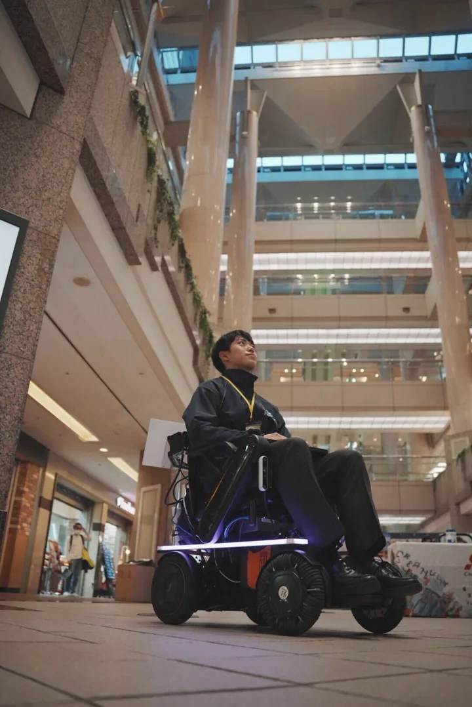
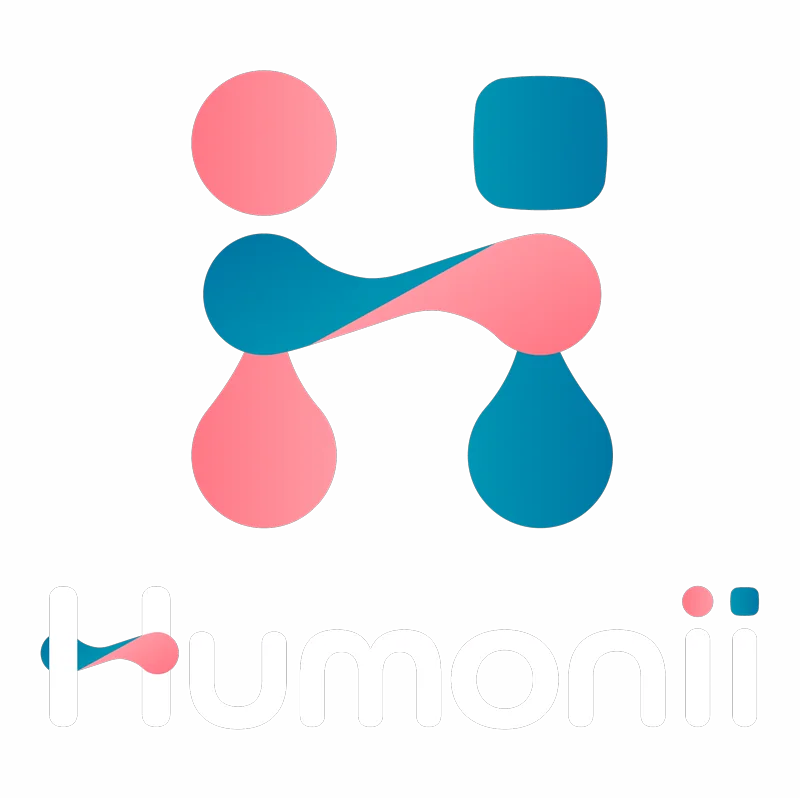
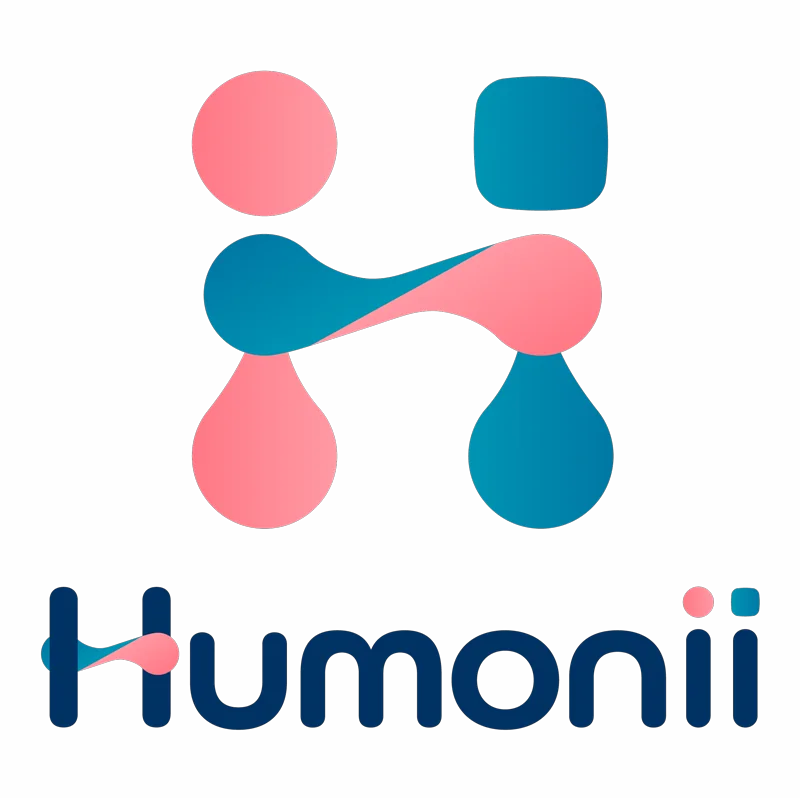

体幹操作で電動車いすを操る、ハンズフリー移動体験。
ROBOTICS RESEARCHER
Suzuki Yuma PhD student / 未踏AD '25 クリエーター
慶應義塾大学大学院理工学研究科 / 髙橋正樹研究室
I explore Shared Autonomy and Learning to Operate Intelligent Machines, viewing assistive technologies like electric wheelchairs as a form of body augmentation. By studying how humans and machines co-adapt, I seek to unlock insights that benefit everyone—regardless of age or ability. My goal is to foster a future where humans and intelligent robots evolve together, creating a vibrant and inclusive society for all.

OUTPUT MOVIES
ギャラリー
搭乗者の操作と自律支援を組み合わせる、電動車いすの共有制御デモ。
PAPER WORKS
論文・研究発表
2025
Controllability Assessment of Belt-Type Wheelchair Interface with Individualized Asymmetry-Aware Body-Axis Calibration
＠2025 IEEE International Conference on Systems, Man, and Cybernetics
2025
ベルト型インターフェースを用いた車いすの操作性能評価
＠ロボティクス・メカトロニクス講演会 2025（ROBOMECH 2025）
2025
車いすの搭乗者行動適応型力ベース共有制御
＠ロボティクス・メカトロニクス講演会 2025（ROBOMECH 2025）
ACTIVITY HISTORY
活動実績
2026/01/16
2025/12/12
2025/11/23
2025/11/02
Japan Mobility Show 2025「Startup Future Factory」ブースにて「Feeling」を出展
2025/10/17
2025/10/14

2025/10/08
2025/07/19
サマコンフェスにて「Feeling」を出展
2025/07/16
2025年度 健康医療ベンチャー大賞 キックオフイベントにて「Feeling」を出展
2025/07/03
2025/05/20
2025/03/05
2025/03/01
2025/01/24
2024/12/13
2024/09/05
タウンニュース港北区版にHumoniiの活動が掲載
2024/08/19
令和6年度 技術系スタートアップ実証実験等支援プログラムにHumoniiが採択
2023/09/02
Mobility for ALL 2023 の実証実験に参加
2023/05/13
Mobility for ALL 2023にHumoniiが採択
APPEAL POINT
社会実装プロジェクト / Humonii


「周りと違うから」「体が思うように動かないから」と、今までできてたこと、やりたいことを諦めてきた人たちに「もっとできる！」を届けたい。年齢や障がいの有無に関わらず、誰も想像すらしなかった人間の新たな境地をも引き出せたらどんな未来が待っているだろう。体幹操作によるハンズフリー体験によって移動に留まらず活動の幅を拡張し、新しい挑戦への一歩を支えます。